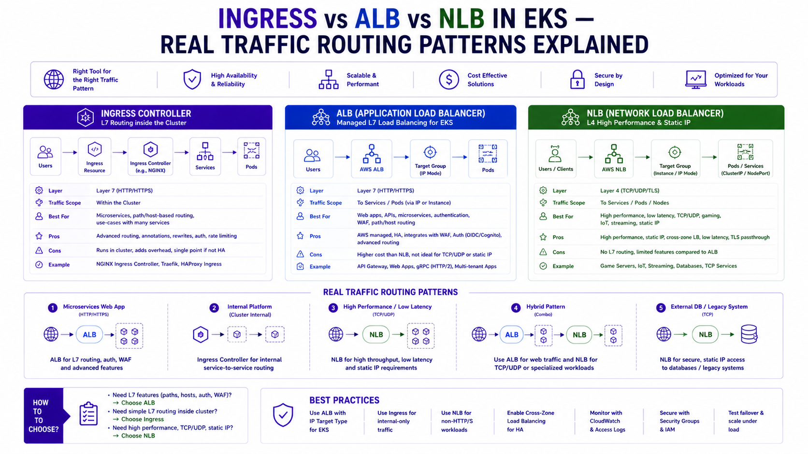

Ingress vs ALB vs NLB in EKS — Real Traffic Routing Patterns Explained
AWS Series | Part 12 — Building secure, cost-optimised, cloud-native infrastructure on AWS.

TL;DR Comparison
| Kubernetes Ingress (Nginx) | AWS ALB Ingress Controller | AWS NLB (Service LoadBalancer) | |
|---|---|---|---|
| OSI Layer | Layer 7 (HTTP/HTTPS) | Layer 7 (HTTP/HTTPS) | Layer 4 (TCP/UDP/TLS) |
| Traffic routing | Path + host based | Path + host based | Port based only |
| TLS termination | At Nginx pod | At ALB | At NLB or pass-through |
| WebSocket support | ✅ Native | ✅ Native | ✅ Native |
| gRPC support | ✅ Native | ✅ HTTP/2 required | ✅ Native (TCP passthrough) |
| WAF integration | ❌ Manual | ✅ Native annotation | ❌ Not supported |
| Target type | ClusterIP via Service | Pod IP direct (ip mode) | Pod IP or Node port |
| Cross-namespace routing | ✅ Via IngressClass | ❌ Per-namespace | ❌ Per-namespace |
| Static IP | ❌ | ❌ (DNS only) | ✅ Elastic IP |
| Preserve client IP | ✅ Via X-Forwarded-For | ✅ Via X-Forwarded-For | ✅ Native (Layer 4) |
| Cost | EC2 nodes for Nginx pods | Per ALB + LCU charges | Per NLB + LCU charges |
| Best for | Complex routing, cross-namespace, cost at scale | AWS-native, WAF, simple path routing | gRPC, static IP, TCP workloads, ultra-low latency |
Introduction
EKS networking trips up engineers at every seniority level. The question sounds simple: how do I get traffic from the internet into my pods? The answer has at least five legitimate options, each with different trade-offs that matter enormously at production scale.
I have seen three patterns used at the Rabobank fraud detection platform — Nginx Ingress for the application tier, NLB for the message broker (Amazon MQ), and ALB for the ArgoCD UI. Each was the right choice for its specific traffic pattern. Using the wrong one is not just a performance problem — it's a cost problem, a security problem, and sometimes a capability problem (try routing gRPC through a Layer 7 ALB without HTTP/2 and watch it fail silently).
This post covers the full picture: what each option actually does at the packet level, when each is the right choice, the full Terraform and Kubernetes YAML for every pattern, the production gotchas that documentation doesn't mention, and the architecture I'd use starting fresh today.
1. The Traffic Path — What Actually Happens
Before choosing any option, understand the full traffic path into your EKS cluster:
Internet
↓
Route 53 (DNS)
↓
Load Balancer (ALB or NLB) — lives in PUBLIC subnets
↓
[Option A] Nginx Ingress pods — in PRIVATE subnets (ClusterIP service)
↓ (Nginx proxies to)
Application pods — in PRIVATE subnets
[Option B] ALB → Pod IPs directly (ip target mode)
↓ (ALB routes to pod ENI directly)
Application pods — in PRIVATE subnets
[Option C] NLB → Pod IPs (ip target mode) or Node ports
↓
Application pods — in PRIVATE subnetsThe key insight: In all cases, your application pods stay in private subnets. The load balancer is the only component with internet exposure. The question is only about what does the routing between the load balancer and your pods.
2. Kubernetes Ingress with Nginx — Fine-Grained Routing Control
What It Is
An Ingress is a Kubernetes API object that defines routing rules — "requests to /api/fraud go to the fraud service, requests to /api/payments go to the payments service." On its own, an Ingress object does nothing. It requires an Ingress Controller — a pod (or set of pods) that reads the Ingress rules and implements them.
Nginx Ingress Controller is the most widely used. It runs as a Deployment in your cluster, reads all Ingress objects cluster-wide, and programs an Nginx reverse proxy accordingly. An NLB or ALB sits in front of the Nginx pods and forwards all traffic to them — Nginx then handles the Layer 7 routing.
Internet → NLB (L4, TCP passthrough) → Nginx Ingress pods → Application podsWhy Nginx Over the ALB Ingress Controller
At Rabobank, we chose Nginx over the ALB Ingress Controller for the application tier for three specific reasons:
1. Cross-namespace routing — Nginx can route traffic from one Ingress resource to services in different namespaces. The ALB Ingress Controller creates one ALB per Ingress object, and each ALB can only target services in the same namespace. With 33 microservices across 5 namespaces, the ALB approach would have created 33 ALBs — one per service — at ~$22/month each = $726/month in ALB costs alone.
2. Richer annotation set — Nginx supports canary deployments, rate limiting, custom headers, and CORS configuration all via annotations. These patterns are baked into Nginx; replicating them with ALB requires AWS WAF rules and significantly more complexity.
3. WebSocket and gRPC — Nginx handles both without any special configuration. ALB requires alb.ingress.kubernetes.io/backend-protocol-version: GRPC annotation and HTTP/2 enabled on both the ALB and the target service.
Full Nginx Ingress Setup — Terraform + Helm
# NLB for Nginx — Layer 4 passthrough, preserves client IP
resource "helm_release" "nginx_ingress" {
name = "ingress-nginx"
repository = "https://kubernetes.github.io/ingress-nginx"
chart = "ingress-nginx"
version = "4.10.1"
namespace = "ingress-nginx"
create_namespace = true
values = [yamlencode({
controller = {
# Use NLB in front of Nginx — not ALB
# NLB gives us static IPs and true TCP passthrough
service = {
type = "LoadBalancer"
annotations = {
"service.beta.kubernetes.io/aws-load-balancer-type" = "external"
"service.beta.kubernetes.io/aws-load-balancer-nlb-target-type" = "ip"
"service.beta.kubernetes.io/aws-load-balancer-scheme" = "internet-facing"
"service.beta.kubernetes.io/aws-load-balancer-cross-zone-load-balancing-enabled" = "true"
# Static EIP — Nginx NLB gets a fixed IP (useful for allowlisting)
"service.beta.kubernetes.io/aws-load-balancer-eip-allocations" = join(",", [
aws_eip.nlb_az_a.allocation_id,
aws_eip.nlb_az_b.allocation_id,
])
}
}
# Resource requests — Nginx pods need headroom for burst traffic
resources = {
requests = { cpu = "200m", memory = "256Mi" }
limits = { cpu = "1000m", memory = "1Gi" }
}
# HA — one Nginx pod per AZ
replicaCount = 2
topologySpreadConstraints = [{
maxSkew = 1
topologyKey = "topology.kubernetes.io/zone"
whenUnsatisfiable = "DoNotSchedule"
labelSelector = {
matchLabels = { "app.kubernetes.io/name" = "ingress-nginx" }
}
}]
# Metrics for Prometheus scraping
metrics = {
enabled = true
serviceMonitor = { enabled = true }
}
# Config — tune for production
config = {
"use-forwarded-headers" = "true"
"compute-full-forwarded-for" = "true"
"use-proxy-protocol" = "false"
"proxy-body-size" = "50m"
"proxy-connect-timeout" = "10"
"proxy-send-timeout" = "60"
"proxy-read-timeout" = "60"
"keep-alive" = "75"
"keep-alive-requests" = "1000"
"upstream-keepalive-connections" = "320"
}
}
})]
}
# Elastic IPs — fixed IPs for the NLB
resource "aws_eip" "nlb_az_a" {
domain = "vpc"
tags = { Name = "nginx-nlb-eip-az-a" }
}
resource "aws_eip" "nlb_az_b" {
domain = "vpc"
tags = { Name = "nginx-nlb-eip-az-b" }
}Ingress Resources — Routing Rules
# fraud-detection ingress — path-based routing to multiple services
apiVersion: networking.k8s.io/v1
kind: Ingress
metadata:
name: fraud-detection-ingress
namespace: fraud-detection
annotations:
kubernetes.io/ingress.class: nginx
# Rate limiting — 100 req/min per IP
nginx.ingress.kubernetes.io/limit-rps: "100"
nginx.ingress.kubernetes.io/limit-connections: "20"
# Timeouts
nginx.ingress.kubernetes.io/proxy-connect-timeout: "10"
nginx.ingress.kubernetes.io/proxy-send-timeout: "60"
nginx.ingress.kubernetes.io/proxy-read-timeout: "60"
# Custom response headers
nginx.ingress.kubernetes.io/configuration-snippet: |
add_header X-Frame-Options "DENY" always;
add_header X-Content-Type-Options "nosniff" always;
add_header Strict-Transport-Security "max-age=31536000" always;
# TLS — cert managed by cert-manager
cert-manager.io/cluster-issuer: letsencrypt-prod
spec:
tls:
- hosts:
- fraud-api.internal.company.com
secretName: fraud-api-tls
rules:
- host: fraud-api.internal.company.com
http:
paths:
# Scoring service — latency-sensitive
- path: /api/v1/score
pathType: Prefix
backend:
service:
name: scoring-service
port:
number: 8080
# Enrichment service
- path: /api/v1/enrich
pathType: Prefix
backend:
service:
name: enrichment-service
port:
number: 8080
# Health check — separate path
- path: /health
pathType: Exact
backend:
service:
name: scoring-service
port:
number: 8080
---
# Canary deployment — send 10% of scoring traffic to v2
apiVersion: networking.k8s.io/v1
kind: Ingress
metadata:
name: fraud-scoring-canary
namespace: fraud-detection
annotations:
kubernetes.io/ingress.class: nginx
nginx.ingress.kubernetes.io/canary: "true"
nginx.ingress.kubernetes.io/canary-weight: "10" # 10% to canary
spec:
rules:
- host: fraud-api.internal.company.com
http:
paths:
- path: /api/v1/score
pathType: Prefix
backend:
service:
name: scoring-service-v2 # Canary service
port:
number: 8080Cross-Namespace Routing with Nginx
This is the capability that saves the most money in a multi-namespace cluster:
# Single Ingress in the ingress-nginx namespace routing to services
# across multiple namespaces — not possible with ALB Ingress Controller
apiVersion: networking.k8s.io/v1
kind: Ingress
metadata:
name: platform-ingress
namespace: ingress-nginx
annotations:
kubernetes.io/ingress.class: nginx
# Route to fraud-detection namespace
nginx.ingress.kubernetes.io/upstream-vhost: "scoring-service.fraud-detection.svc.cluster.local"
spec:
rules:
- host: platform.internal.company.com
http:
paths:
- path: /fraud
pathType: Prefix
backend:
service:
name: scoring-service # ExternalName service pointing cross-namespace
port:
number: 80803. AWS ALB Ingress Controller — AWS-Native L7 Routing
What It Is
The AWS Load Balancer Controller is a Kubernetes controller that watches for Ingress objects with ingressClassName: alb and automatically creates and manages AWS Application Load Balancers. Each Ingress creates one ALB. The ALB routes directly to pod IPs (in ip target mode) — no Nginx pod in the middle.
Internet → ALB (managed by AWS LBC) → Pod IPs directly (via VPC ENI)When ALB Is the Right Choice
- WAF integration — the ALB Ingress Controller supports attaching a WAF WebACL via a single annotation. This is the cleanest path to Layer 7 protection without additional infrastructure.
- Simple path routing for a single service — if you have one service per namespace and simple routing needs, one ALB per service is perfectly appropriate.
- AWS Certificate Manager integration — TLS certificates from ACM attach to ALBs automatically. Nginx requires cert-manager or manual certificate management.
- Target group reuse across namespaces — the
TargetGroupBindingresource lets an ALB target group reference pods in any namespace, partially closing the cross-namespace gap.
Full ALB Ingress Controller Setup
# AWS Load Balancer Controller — IAM role via Pod Identity
resource "aws_iam_role" "aws_lb_controller" {
name = "aws-load-balancer-controller"
assume_role_policy = jsonencode({
Version = "2012-10-17"
Statement = [{
Effect = "Allow"
Principal = { Service = "pods.eks.amazonaws.com" }
Action = ["sts:AssumeRole", "sts:TagSession"]
}]
})
}
resource "aws_iam_role_policy_attachment" "aws_lb_controller" {
role = aws_iam_role.aws_lb_controller.name
policy_arn = aws_iam_policy.aws_lb_controller.arn
}
resource "aws_eks_pod_identity_association" "aws_lb_controller" {
cluster_name = aws_eks_cluster.main.name
namespace = "kube-system"
service_account = "aws-load-balancer-controller"
role_arn = aws_iam_role.aws_lb_controller.arn
}
resource "helm_release" "aws_lb_controller" {
name = "aws-load-balancer-controller"
repository = "https://aws.github.io/eks-charts"
chart = "aws-load-balancer-controller"
version = "1.8.1"
namespace = "kube-system"
set {
name = "clusterName"
value = aws_eks_cluster.main.name
}
set {
name = "serviceAccount.name"
value = "aws-load-balancer-controller"
}
# HA — 2 replicas across AZs
set {
name = "replicaCount"
value = "2"
}
depends_on = [aws_eks_pod_identity_association.aws_lb_controller]
}ALB Ingress — Production Configuration
# ALB Ingress — full production annotation set
apiVersion: networking.k8s.io/v1
kind: Ingress
metadata:
name: argocd-ingress
namespace: argocd
annotations:
kubernetes.io/ingress.class: alb
# Scheme — internet-facing or internal
alb.ingress.kubernetes.io/scheme: internal # ArgoCD is internal only
# Target type — ip routes to pod IPs directly (bypass kube-proxy)
alb.ingress.kubernetes.io/target-type: ip
# TLS — ACM certificate
alb.ingress.kubernetes.io/certificate-arn: arn:aws:acm:eu-west-1:123456789012:certificate/xxx
alb.ingress.kubernetes.io/ssl-policy: ELBSecurityPolicy-TLS13-1-2-2021-06
alb.ingress.kubernetes.io/listen-ports: '[{"HTTP": 80}, {"HTTPS": 443}]'
alb.ingress.kubernetes.io/ssl-redirect: "443" # Force HTTPS
# WAF — attach WebACL directly to ALB
alb.ingress.kubernetes.io/wafv2-acl-arn: arn:aws:wafv2:eu-west-1:123456789012:regional/webacl/prod-waf/xxx
# Health check
alb.ingress.kubernetes.io/healthcheck-path: /healthz
alb.ingress.kubernetes.io/healthcheck-interval-seconds: "15"
alb.ingress.kubernetes.io/healthcheck-timeout-seconds: "5"
alb.ingress.kubernetes.io/success-codes: "200"
# Connection draining — wait for in-flight requests before pod termination
alb.ingress.kubernetes.io/target-group-attributes: |
deregistration_delay.timeout_seconds=30,
slow_start.duration_seconds=30
# Access logs — ship ALB logs to S3
alb.ingress.kubernetes.io/load-balancer-attributes: |
access_logs.s3.enabled=true,
access_logs.s3.bucket=my-alb-logs-bucket,
access_logs.s3.prefix=argocd-alb,
idle_timeout.timeout_seconds=60
# Security groups
alb.ingress.kubernetes.io/security-groups: sg-alb-prod
# Subnets — only deploy ALB into public subnets tagged for ALB discovery
alb.ingress.kubernetes.io/subnets: subnet-public-az-a,subnet-public-az-b
spec:
rules:
- host: argocd.internal.company.com
http:
paths:
- path: /
pathType: Prefix
backend:
service:
name: argocd-server
port:
number: 80ALB IngressGroup — Share One ALB Across Multiple Ingresses
This is the cost optimisation that changes the ALB cost equation. Without IngressGroup, each Ingress creates one ALB (~$22/month). With IngressGroup, multiple Ingress objects share one ALB:
# Ingress 1 — fraud detection service
apiVersion: networking.k8s.io/v1
kind: Ingress
metadata:
name: fraud-detection-ingress
namespace: fraud-detection
annotations:
kubernetes.io/ingress.class: alb
alb.ingress.kubernetes.io/group.name: platform-alb # Shared ALB group
alb.ingress.kubernetes.io/group.order: "10" # Rule evaluation order
alb.ingress.kubernetes.io/scheme: internal
alb.ingress.kubernetes.io/target-type: ip
spec:
rules:
- host: platform.internal.company.com
http:
paths:
- path: /api/fraud
pathType: Prefix
backend:
service:
name: fraud-scoring-service
port:
number: 8080
---
# Ingress 2 — payments service (different namespace, same ALB)
apiVersion: networking.k8s.io/v1
kind: Ingress
metadata:
name: payments-ingress
namespace: payments
annotations:
kubernetes.io/ingress.class: alb
alb.ingress.kubernetes.io/group.name: platform-alb # Same group = same ALB
alb.ingress.kubernetes.io/group.order: "20"
alb.ingress.kubernetes.io/scheme: internal
alb.ingress.kubernetes.io/target-type: ip
spec:
rules:
- host: platform.internal.company.com
http:
paths:
- path: /api/payments
pathType: Prefix
backend:
service:
name: payment-processing-service
port:
number: 8080Cost impact: 10 services without IngressGroup = 10 ALBs = ~$220/month. 10 services with IngressGroup = 1 ALB = ~$22/month + LCU charges. The IngressGroup annotation is the single most impactful cost optimisation in EKS networking.
4. NLB — Layer 4 for gRPC, TCP, and Static IPs
What It Is
A Network Load Balancer operates at Layer 4 — it routes TCP and UDP packets without inspecting HTTP headers. In EKS, you create an NLB by creating a Kubernetes Service of type LoadBalancer with AWS-specific annotations. The AWS Load Balancer Controller provisions and manages the NLB automatically.
Internet → NLB (TCP passthrough) → Pod IPs directlyWhen NLB Is the Right Choice
- gRPC workloads — gRPC uses HTTP/2 with long-lived connections and bidirectional streaming. ALB can handle gRPC but requires HTTP/2 on the backend and specific annotations. NLB with TCP passthrough lets gRPC flow through without any protocol awareness — the simplest and most reliable approach.
- Static IP requirement — ALBs have DNS names that resolve to changing IPs. NLBs support Elastic IPs — fixed public IPs that clients can allowlist. Essential when your clients need to whitelist your ingress IP.
- Ultra-low latency — NLB has roughly 1ms less latency than ALB because it doesn't inspect packets. For latency-sensitive protocols, this matters.
- Non-HTTP protocols — WebSockets work on both, but pure TCP/UDP services (game servers, MQTT brokers, database proxies) require NLB.
At Rabobank: Amazon MQ (message broker) was exposed internally via NLB with ip target mode. gRPC services between internal components used NLB for the same reason — TCP passthrough, no protocol inspection overhead.
NLB via Kubernetes Service
# NLB Service — internet-facing with static EIP
apiVersion: v1
kind: Service
metadata:
name: fraud-grpc-service
namespace: fraud-detection
annotations:
# Use the AWS Load Balancer Controller (not the legacy in-tree controller)
service.beta.kubernetes.io/aws-load-balancer-type: "external"
# ip target mode — route to pod IPs directly, not node ports
service.beta.kubernetes.io/aws-load-balancer-nlb-target-type: "ip"
# internet-facing or internal
service.beta.kubernetes.io/aws-load-balancer-scheme: "internal"
# Cross-zone load balancing — distribute across all AZs
service.beta.kubernetes.io/aws-load-balancer-cross-zone-load-balancing-enabled: "true"
# Static EIPs — fixed IPs for client allowlisting
service.beta.kubernetes.io/aws-load-balancer-eip-allocations: "eipalloc-xxx,eipalloc-yyy"
# Health check — TCP check on the gRPC port
service.beta.kubernetes.io/aws-load-balancer-healthcheck-protocol: "TCP"
service.beta.kubernetes.io/aws-load-balancer-healthcheck-interval: "10"
# Access logs
service.beta.kubernetes.io/aws-load-balancer-access-log-enabled: "true"
service.beta.kubernetes.io/aws-load-balancer-access-log-s3-bucket-name: "nlb-logs-bucket"
service.beta.kubernetes.io/aws-load-balancer-access-log-s3-bucket-prefix: "fraud-grpc"
# Connection draining
service.beta.kubernetes.io/aws-load-balancer-target-group-attributes: |
deregistration_delay.timeout_seconds=30
spec:
type: LoadBalancer
loadBalancerClass: service.k8s.aws/nlb # Explicit — use AWS LBC, not in-tree
selector:
app: fraud-grpc-service
ports:
- name: grpc
port: 443
targetPort: 50051 # gRPC port on the pod
protocol: TCPNLB with TLS Passthrough vs TLS Termination
# TLS passthrough — NLB doesn't decrypt, pod handles TLS
# Use when your gRPC service does its own mTLS
metadata:
annotations:
service.beta.kubernetes.io/aws-load-balancer-ssl-cert: "" # No cert = passthrough
---
# TLS termination at NLB — NLB decrypts, forwards plain TCP to pod
# Use when you want ACM cert management without pod-level TLS handling
metadata:
annotations:
service.beta.kubernetes.io/aws-load-balancer-ssl-cert: arn:aws:acm:eu-west-1:123:certificate/xxx
service.beta.kubernetes.io/aws-load-balancer-ssl-ports: "443"
service.beta.kubernetes.io/aws-load-balancer-backend-protocol: "tcp" # Plain TCP to pod after termination5. The VPC CNI and IP Allocation — The Hidden Bottleneck
This is the networking detail that causes the most mysterious failures in production EKS clusters. Every pod in EKS gets a real VPC IP address from your subnet CIDR. By default, VPC CNI pre-allocates IPs on each node — and you can run out.
The Default Behaviour (And Why It Fails)
Default VPC CNI behaviour:
Node warm pool = max(WARM_ENI_TARGET, WARM_IP_TARGET)
Default: WARM_ENI_TARGET = 1
On an m5.xlarge (3 ENIs, 15 IPs per ENI = 45 IPs max):
At startup: node pre-allocates 1 warm ENI = 15 IPs consumed
First pod scheduled: another ENI attached = 15 more IPs consumed
Result: 30 IPs consumed before you've scheduled any meaningful workloadsFix — Enable Prefix Delegation
Prefix Delegation allocates a /28 block (16 IPs) per ENI slot instead of individual IPs. Same ENI count, 16× more IPs:
# Enable prefix delegation in VPC CNI addon config
resource "aws_eks_addon" "vpc_cni" {
cluster_name = aws_eks_cluster.main.name
addon_name = "vpc-cni"
addon_version = "v1.18.1-eksbuild.1"
configuration_values = jsonencode({
env = {
ENABLE_PREFIX_DELEGATION = "true" # /28 prefixes instead of individual IPs
WARM_PREFIX_TARGET = "1" # Keep 1 warm prefix per node
MINIMUM_IP_TARGET = "3" # Minimum IPs always available
}
})
}Why this matters for Ingress: Nginx Ingress pods, ALB controller pods, and your application pods all consume VPC IPs. On a cluster with 33 microservices and 2 replicas each plus Nginx, you need ~70+ pod IPs per AZ. Without prefix delegation, a subnet with 256 IPs (/24) fills up fast. With prefix delegation, the same number of ENIs supports 16× more pods.
6. Service Types — ClusterIP, NodePort, LoadBalancer Explained
Before Ingress makes sense, you need to understand Kubernetes Service types because Ingress sits on top of them:
# ClusterIP — internal only, no external access
# Default type — use for service-to-service communication
apiVersion: v1
kind: Service
metadata:
name: fraud-scoring-internal
namespace: fraud-detection
spec:
type: ClusterIP
selector:
app: fraud-scoring
ports:
- port: 8080
targetPort: 8080
# Accessible at: fraud-scoring-internal.fraud-detection.svc.cluster.local:8080
# NOT accessible from outside the cluster
---
# NodePort — exposes on every node's IP at a static port (30000-32767)
# Almost never the right choice in production EKS — use LoadBalancer or Ingress
apiVersion: v1
kind: Service
metadata:
name: fraud-scoring-nodeport
spec:
type: NodePort
selector:
app: fraud-scoring
ports:
- port: 8080
targetPort: 8080
nodePort: 30080 # Exposed on every node at this port
# Accessible at: <any-node-ip>:30080
---
# LoadBalancer — creates a cloud load balancer (NLB or ALB)
# One LB per service — gets expensive at scale
apiVersion: v1
kind: Service
metadata:
name: fraud-scoring-lb
annotations:
service.beta.kubernetes.io/aws-load-balancer-type: "external"
service.beta.kubernetes.io/aws-load-balancer-nlb-target-type: "ip"
spec:
type: LoadBalancer
selector:
app: fraud-scoring
ports:
- port: 443
targetPort: 8080The cost implications:
30 services × LoadBalancer type (NLB) = 30 NLBs × ~$16/month = $480/month
30 services × ClusterIP + 1 Nginx Ingress (NLB) = 1 NLB × ~$16/month = $16/month
Saving: $464/month — just from using Ingress instead of LoadBalancer per service7. cert-manager — Automated TLS Certificate Management
Regardless of whether you use Nginx or ALB Ingress, you need TLS. For Nginx, cert-manager automates certificate issuance from Let's Encrypt or your internal CA. For ALB, ACM handles certificates natively — but cert-manager is still useful for internal services.
# cert-manager via Helm
resource "helm_release" "cert_manager" {
name = "cert-manager"
repository = "https://charts.jetstack.io"
chart = "cert-manager"
version = "v1.15.0"
namespace = "cert-manager"
create_namespace = true
set {
name = "installCRDs"
value = "true"
}
# Pod Identity for Route 53 DNS validation
set {
name = "serviceAccount.annotations.eks\\.amazonaws\\.com/role-arn"
value = aws_iam_role.cert_manager.arn
}
}# ClusterIssuer — Let's Encrypt with DNS-01 validation via Route 53
apiVersion: cert-manager.io/v1
kind: ClusterIssuer
metadata:
name: letsencrypt-prod
spec:
acme:
server: https://acme-v02.api.letsencrypt.org/directory
email: platform@company.com
privateKeySecretRef:
name: letsencrypt-prod-key
solvers:
- dns01:
route53:
region: eu-west-1
hostedZoneID: Z1234EXAMPLE # Your Route 53 zone ID
---
# Certificate — automatically issued and renewed by cert-manager
apiVersion: cert-manager.io/v1
kind: Certificate
metadata:
name: fraud-api-tls
namespace: fraud-detection
spec:
secretName: fraud-api-tls # Secret name referenced in Ingress
issuerRef:
name: letsencrypt-prod
kind: ClusterIssuer
dnsNames:
- fraud-api.internal.company.com8. The Rabobank Pattern — What We Actually Used
At Rabobank, the fraud detection platform used a hybrid approach that I'd replicate on any similar platform:
External access (developer tools, ArgoCD UI):
→ ALB (AWS LBC) with WAF WebACL + ACM certificate
→ Single ALB shared via IngressGroup annotation
→ WAF blocks known bad IPs, rate limits, OWASP rules
Application tier (33 microservices):
→ Nginx Ingress Controller with NLB in front
→ NLB has Elastic IPs — security team can allowlist the platform egress
→ Nginx handles path routing, canary weights, rate limiting via annotations
→ cert-manager issues internal TLS certs from internal CA
Message broker (Amazon MQ):
→ NLB in ip target mode, internal scheme
→ TLS passthrough — MQ handles its own TLS
→ Static private IP — consumers configured with fixed broker address
gRPC services (internal service-to-service):
→ ClusterIP only — no external exposure
→ CoreDNS for service discovery
→ No load balancer at all — Kubernetes handles routing via kube-proxyThe key insight: not every service needs a load balancer. Services that only communicate internally use ClusterIP — it's free, it's fast (no extra hop), and it scales automatically. Only services that need external access need an Ingress or LoadBalancer.
9. Cost Comparison — Real Numbers
Scenario: 30 microservices in EKS, eu-west-1
Option A — LoadBalancer per service (30 NLBs):
30 NLBs × $16.43/month = $492.90/month
LCU charges (moderate traffic) = ~$50.00/month
Total: ~$542.90/month
Option B — ALB Ingress Controller (1 ALB per namespace × 5 namespaces):
5 ALBs × $22.27/month = $111.35/month
LCU charges = ~$30.00/month
Total: ~$141.35/month
Option C — ALB IngressGroup (1 shared ALB):
1 ALB × $22.27/month = $22.27/month
LCU charges (higher per ALB) = ~$40.00/month
Total: ~$62.27/month
Option D — Nginx Ingress + 1 NLB (Rabobank pattern):
1 NLB × $16.43/month = $16.43/month
2 Nginx pods (m5.large fraction) = ~$15.00/month
LCU on NLB (low — L4 only) = ~$5.00/month
Total: ~$36.43/month
Monthly saving: Option D vs Option A = $506.47/month
Annual saving: = $6,077.64/year10. The Decision Framework
Do you need Layer 7 routing (path/host-based)?
├── NO → NLB (Service LoadBalancer type)
│ ├── Need static IP? → NLB + EIP
│ ├── gRPC / WebSocket / TCP? → NLB (TCP passthrough)
│ └── Ultra-low latency? → NLB
└── YES → Ingress (Layer 7)
├── How many services need external access?
│ ├── 1-3 services → ALB Ingress Controller (simple, AWS-native)
│ └── 4+ services → Nginx Ingress (cheaper, more control)
├── Need WAF integration?
│ ├── YES → ALB Ingress Controller (native WAF annotation)
│ └── NO → Either — Nginx with rate limiting, ALB without WAF
├── Need canary deployments?
│ ├── YES → Nginx (native canary annotation)
│ └── NO → Either
├── Need cross-namespace routing without multiple ALBs?
│ ├── YES → Nginx
│ └── NO (IngressGroup solves it) → ALB
└── Need TLS managed by ACM?
├── YES → ALB (native ACM integration)
└── NO (cert-manager is fine) → Nginx
Service-to-service communication (internal only)?
└── Always use ClusterIP — no load balancer needed11. Common Mistakes & Anti-Patterns
Mistake 1: One LoadBalancer Service Per Microservice
Creating a Kubernetes Service of type LoadBalancer for each of your 30 microservices creates 30 NLBs. At ~$16/month each that's $480/month for what should be a $16/month NLB fronting Nginx. Use ClusterIP for internal services, Ingress for external.
Mistake 2: ALB in instance Target Mode Instead of ip
instance target mode routes to node ports, which adds an extra kube-proxy hop and breaks pod-level Security Groups. Always use ip target mode — it routes directly to pod ENIs, respects pod Security Groups, and has lower latency.
Mistake 3: Forgetting the Subnet Tags for ALB/NLB Discovery
The AWS Load Balancer Controller discovers subnets by tag. Without these tags, ALB/NLB creation silently fails with a confusing error:
# Public subnets — required for internet-facing ALB/NLB
resource "aws_subnet" "public" {
tags = {
"kubernetes.io/cluster/${var.cluster_name}" = "shared"
"kubernetes.io/role/elb" = "1" # ← Required for internet-facing LB
}
}
# Private subnets — required for internal ALB/NLB
resource "aws_subnet" "private" {
tags = {
"kubernetes.io/cluster/${var.cluster_name}" = "shared"
"kubernetes.io/role/internal-elb" = "1" # ← Required for internal LB
"karpenter.sh/discovery" = var.cluster_name
}
}Mistake 4: No Connection Draining on Pod Termination
Without connection draining, a pod being terminated drops in-flight requests. The fix is two-part: deregistration delay on the target group (30 seconds) AND a preStop hook on the pod:
lifecycle:
preStop:
exec:
command: ["/bin/sh", "-c", "sleep 15"] # Wait for LB to stop sending traffic
# before the pod starts shutting down
terminationGracePeriodSeconds: 45 # Must be > deregistration delay + preStop sleepMistake 5: Using Nginx Without Resource Requests
Nginx Ingress pods without CPU/memory requests will be scheduled on any available node and can be evicted by Karpenter during bin-packing. Set resource requests that reflect actual usage, and use topology spread constraints to keep one Nginx pod per AZ:
resources:
requests:
cpu: "200m"
memory: "256Mi"
limits:
cpu: "1000m"
memory: "1Gi"Mistake 6: Not Enabling Access Logs
ALB and NLB access logs are disabled by default. For any production workload, enable them — they're essential for debugging latency spikes, error rates, and security incidents. The S3 storage cost is negligible.
Mistake 7: Mixing Ingress Classes Without Isolation
Running both Nginx and ALB Ingress Controller on the same cluster without explicit ingressClassName on every Ingress resource causes both controllers to pick up every Ingress object and fight over it. Always set ingressClassName explicitly:
spec:
ingressClassName: nginx # or "alb" — always explicit, never rely on defaultArchitecture Decision Matrix
| Requirement | Nginx + NLB | ALB Ingress | NLB (LoadBalancer) |
|---|---|---|---|
| Path/host routing | ✅ Native | ✅ Native | ❌ Layer 4 only |
| WAF integration | ❌ Manual | ✅ Native annotation | ❌ Not supported |
| Cross-namespace routing | ✅ Native | ⚠️ IngressGroup partial | ❌ N/A |
| Canary deployments | ✅ Native annotation | ⚠️ Complex | ❌ Not supported |
| gRPC | ✅ TCP passthrough | ⚠️ HTTP/2 required | ✅ TCP passthrough |
| Static IP | ✅ Via NLB EIP | ❌ DNS only | ✅ EIP native |
| TLS via ACM | ❌ cert-manager | ✅ Native | ✅ Native |
| Cost at scale (30+ services) | ✅ Lowest | ⚠️ IngressGroup helps | ❌ Highest |
| AWS-native management | ⚠️ Additional component | ✅ Fully managed | ✅ Fully managed |
| Latency overhead | ⚠️ Extra Nginx hop | ✅ Direct to pod | ✅ Lowest latency |
| Rate limiting | ✅ Native annotation | ❌ Needs WAF | ❌ Not supported |
| Custom headers / CORS | ✅ Native | ❌ Needs Lambda | ❌ N/A |
The Golden Rule
"Use ClusterIP for everything that doesn't need external access — it's free, fast, and scales automatically. Use Nginx Ingress when you have multiple services, need cross-namespace routing, canary deployments, or rate limiting. Use ALB Ingress when you need WAF integration, ACM certificate management, or a fully AWS-managed Layer 7 load balancer for a small number of services. Use NLB when you need gRPC, static IPs, TCP/UDP protocols, or ultra-low latency. And always use ip target mode — routing to pod IPs directly is faster, more secure, and enables pod-level Security Groups."